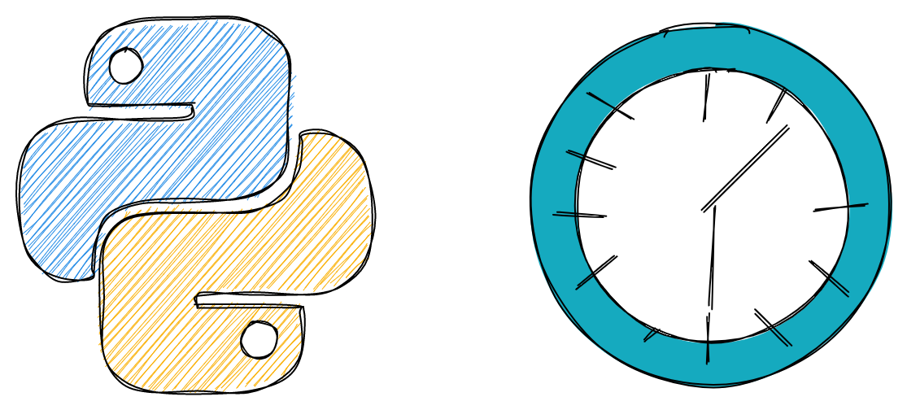
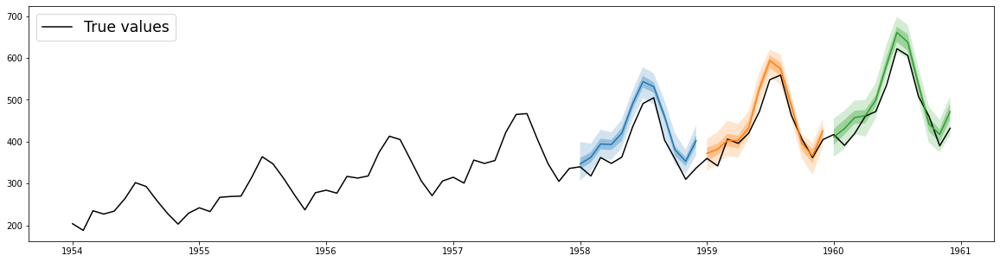
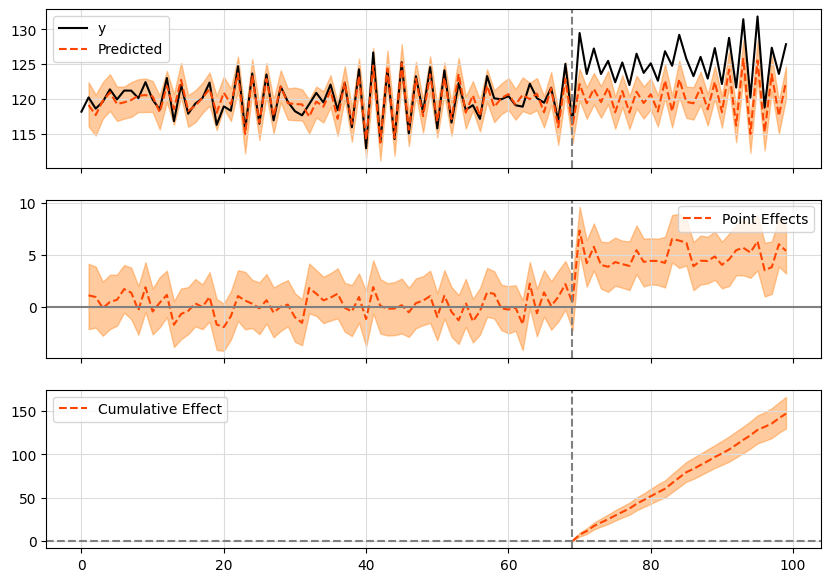
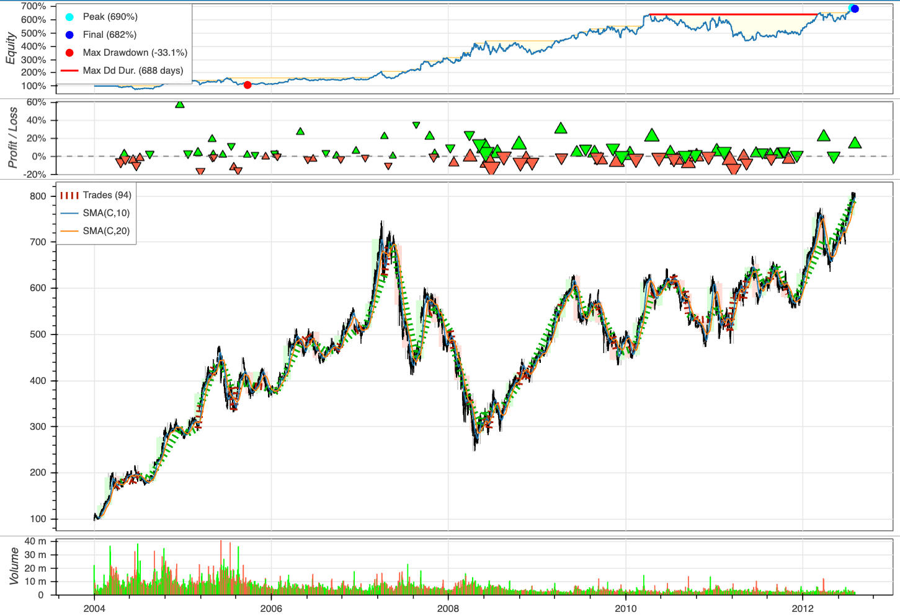

6.7. Time Series#
This section shows some tools to work with datetime and time series.

6.7.1. datefinder: Automatically Find Dates and Time in a Python String#
Show code cell content
!pip install datefinder
To automatically find date and time with different formats in a Python string, use datefinder.
from datefinder import find_dates
text = """"We have one meeting on May 17th, 2021 at 9:00am
and another meeting on 5/18/2021 at 10:00.
I hope you can attend one of the meetings."""
matches = find_dates(text)
for match in matches:
print("Date and time:", match)
print("Only day:", match.day)
6.7.2. Fastai’s add_datepart: Add Relevant DateTime Features in One Line of Code#
Show code cell content
!pip install fastai
Time series analysis often benefits from date-based features like year, month, and day of week. Fastai’s add_datepart method generates these features in one line of code, simplifying data preparation.
import pandas as pd
from fastai.tabular.core import add_datepart
from datetime import datetime
df = pd.DataFrame(
{
"date": [
datetime(2020, 2, 5),
datetime(2020, 2, 6),
datetime(2020, 2, 7),
datetime(2020, 2, 8),
],
"val": [1, 2, 3, 4],
}
)
df
df = add_datepart(df, "date")
df.columns
6.7.3. Maya: Convert the string to datetime automatically#
Show code cell content
!pip install maya
Date string conversion to datetime can be tedious using strptime(). The maya library simplifies this process by automatically parsing date strings without needing to specify the format.
import maya
# Automatically parse datetime string
string = "2016-12-16 18:23:45.423992+00:00"
maya.parse(string).datetime()
Better yet, if you want to convert the string to a different time zone (for example, CST), you can parse that into maya’s datetime function.
maya.parse(string).datetime(to_timezone="US/Central")
6.7.4. Pendulum: Python Datetimes Made Easy#
Show code cell content
!pip install pendulum
While native datetime instances are sufficient for simple cases, they can become difficult to work with when dealing with more complex scenarios.
Conversely, Pendulum offers a more intuitive and user-friendly API, making it a convenient drop-in replacement for the standard datetime class.
The examples below demonstrate the syntax differences between using the standard datetime library and Pendulum.
Datetime:
from datetime import datetime, timedelta
import pytz
# Creating a datetime
now = datetime.now()
print(f"Current time: {now}")
# Date arithmetic
future = now + timedelta(days=7)
print(f"7 days from now: {future}")
# Timezone handling
utc_now = datetime.now(pytz.UTC)
tokyo_tz = pytz.timezone('Asia/Tokyo')
tokyo_time = utc_now.astimezone(tokyo_tz)
print(f"Time in Tokyo: {tokyo_time}")
# Parsing (requires exact format)
parsed = datetime.strptime("2023-05-15 14:30:00", "%Y-%m-%d %H:%M:%S")
# Time difference (not human-readable)
diff = parsed - now
print(f"Difference: {diff}")
Pendulum:
import pendulum
# Creating a datetime
now = pendulum.now()
print(f"Current time: {now}")
# Date arithmetic (more intuitive than datetime)
future = now.add(days=7)
print(f"7 days from now: {future}")
# Timezone handling
tokyo_time = now.in_timezone("Asia/Tokyo")
print(f"Time in Tokyo: {tokyo_time}")
# Parsing without specifying format
parsed = pendulum.parse("2023-05-15 14:30:00")
print(f"Parsed date: {parsed}")
# Human-readable differences
diff = parsed - now
print(f"Difference: {diff.in_words()}")
6.7.5. traces: A Python Library for Unevenly-Spaced Time Series Analysis#
Show code cell content
!pip install traces
To analyze unevenly-spaced time series, you can use the traces library. It allows you to infer missing values in your time series based on the data you already have.
Here’s an example where we log working hours for several dates but miss a few:
# Log working hours for each date
import traces
from datetime import datetime
working_hours = traces.TimeSeries()
working_hours[datetime(2021, 9, 10)] = 10
working_hours[datetime(2021, 9, 12)] = 5
working_hours[datetime(2021, 9, 13)] = 6
working_hours[datetime(2021, 9, 16)] = 2
To retrieve the hours for dates where no data was logged, traces fills in the gaps using neighboring values:
# Get value on 2021/09/11
working_hours[datetime(2021, 9, 11)]
# Get value on 2021/09/14
working_hours[datetime(2021, 9, 14)]
You can also calculate the distribution of working hours over a range of dates:
distribution = working_hours.distribution(
start=datetime(2021, 9, 10),
end=datetime(2021, 9, 16)
)
distribution
From this, we can infer that 50% of the time, 6 hours were logged per day.
To get the median and mean working hours across the range:
distribution.median()
distribution.mean()
6.7.6. Extract holiday from date column#
Show code cell content
!pip install holidays
To identify holidays from a date, use the holidays package. This package offers a dictionary of holidays for various countries.
The following code checks if “2020-07-04” is a US holiday and retrieves its name:
from datetime import date
import holidays
us_holidays = holidays.UnitedStates()
"2014-07-04" in us_holidays
The package handles various date formats:
us_holidays.get("2014-7-4")
us_holidays.get("2014/7/4")
6.7.7. Workalendar: Handle Working-Day Computation in Python#
Show code cell content
!pip install workalendar
To manage calendars, holidays, and working-day computations, use the workalendar package. It supports nearly 100 countries worldwide.
from datetime import date
from workalendar.usa import UnitedStates
from workalendar.asia import Japan
# Get all holidays in the US
US_cal = UnitedStates()
US_cal.holidays(2024)
US_cal.is_working_day(date(2024, 9, 15)) # Sunday
US_cal.is_working_day(date(2024, 9, 2)) # Labor Day
# Calculate working days between 2024/1/19 and 2024/5/15
US_cal.get_working_days_delta(date(2024, 1, 19), date(2024, 5, 15))
# Get holidays in Japan
JA_cal = Japan()
JA_cal.holidays(2024)
6.7.8. Pmdarima: Harness R’s auto.arima Power with a scikit-learn-Like Interface#
Show code cell content
!pip install pmdarima
To achieve functionality similar to R’s auto.arima within a scikit-learn-like interface, use Pmdarima.
import pmdarima as pm
from pmdarima.model_selection import train_test_split
import numpy as np
import matplotlib.pyplot as plt
# Load/split your data
y = pm.datasets.load_wineind()
train, test = train_test_split(y, train_size=150)
# Fit your model
model = pm.auto_arima(train, seasonal=True, m=12)
# Make your forecasts
forecasts = model.predict(test.shape[0]) # predict N steps into the future
# Visualize the forecasts (blue=train, green=forecasts)
x = np.arange(y.shape[0])
plt.plot(x[:150], train, c="blue")
plt.plot(x[150:], forecasts, c="green")
plt.show()
Fitting a more complex pipeline on the sunspots dataset, serializing it, and then loading it from disk to make predictions:
import pmdarima as pm
from pmdarima.model_selection import train_test_split
from pmdarima.pipeline import Pipeline
from pmdarima.preprocessing import BoxCoxEndogTransformer
import pickle
# Load/split your data
y = pm.datasets.load_sunspots()
train, test = train_test_split(y, train_size=2700)
# Define and fit your pipeline
pipeline = Pipeline([
('boxcox', BoxCoxEndogTransformer(lmbda2=1e-6)),
('arima', pm.AutoARIMA(seasonal=True, m=12,
suppress_warnings=True,
trace=True))
])
pipeline.fit(train)
# Serialize your model just like you would in scikit:
with open('model.pkl', 'wb') as pkl:
pickle.dump(pipeline, pkl)
# Load it and make predictions seamlessly:
with open('model.pkl', 'rb') as pkl:
mod = pickle.load(pkl)
print(mod.predict(15))
6.7.9. aeon: The Ultimate Library for Time-Series Forecasting and Classification#
Show code cell content
!pip install aeon
aeon is a library for time-series data that is compatible with scikit-learn and offers a variety of advanced algorithms for learning tasks like forecasting and classification.
import pandas as pd
from aeon.forecasting.trend import TrendForecaster
y = pd.Series([20.0, 40.0, 60.0, 80.0, 100.0])
forecaster = TrendForecaster()
# fit the forecaster
forecaster.fit(y)
# forecast the next 3 values
forecaster.predict(fh=[1, 2, 3])
import numpy as np
from aeon.classification.distance_based import KNeighborsTimeSeriesClassifier
# 3 samples and 6 time steps
X = np.array([[1, 2, 3, 4, 5, 5], [1, 2, 3, 4, 4, 2], [8, 7, 6, 5, 4, 4]])
# class labels for each sample
y = np.array(["low", "low", "high"])
# Define the classifier
clf = KNeighborsTimeSeriesClassifier(distance="dtw")
# fit the classifier on train data
clf.fit(X, y)
# Test data
X_test = np.array([[2, 2, 2, 2, 2, 2], [6, 6, 6, 6, 6, 6]])
# Make class predictions on new data
y_pred = clf.predict(X_test)
y_pred
6.7.10. Ruptures: Detecting Change Points in Non-Stationary Signals#
Show code cell content
!pip install ruptures
Use ruptures to detect change points from non-stationary signals such as trend, seasonality, and variance.
With change points, you can detect anomalies or deviations from the expected behavior and gain insights into when these transitions occur.
import matplotlib.pyplot as plt
import ruptures as rpt
# generate signal
n_samples, n_features, sigma = 1000, 3, 3
num_breakpoints = 3
signal, true_breakpoints = rpt.pw_constant(
n_samples, n_features, num_breakpoints, noise_std=sigma
)
# detection
algo = rpt.Pelt(model="rbf").fit(signal)
predicted_breakpoints = algo.predict(pen=10)
# display
rpt.display(signal, predicted_breakpoints)
plt.show()
6.7.11. GluonTS: Probabilistic Time Series Modeling in Python#
Probabilistic models offer a range of possible future outcomes, rather than a single fixed prediction, allowing for the assessment of risk associated with adverse events.
GluonTS streamlines the process of using probabilistic models for time series data.
import pandas as pd
import matplotlib.pyplot as plt
from gluonts.dataset.pandas import PandasDataset
from gluonts.dataset.split import split
from gluonts.torch import DeepAREstimator
# Load data from a CSV file into a PandasDataset
df = pd.read_csv(
"https://raw.githubusercontent.com/AileenNielsen/"
"TimeSeriesAnalysisWithPython/master/data/AirPassengers.csv",
index_col=0,
parse_dates=True,
)
dataset = PandasDataset(df, target="#Passengers")
# Split the data for training and testing
training_data, test_gen = split(dataset, offset=-36)
test_data = test_gen.generate_instances(prediction_length=12, windows=3)
# Train the model and make predictions
model = DeepAREstimator(
prediction_length=12, freq="M", trainer_kwargs={"max_epochs": 5}
).train(training_data)
forecasts = list(model.predict(test_data.input))
# Plot predictions
plt.plot(df["1954":], color="black")
for forecast in forecasts:
forecast.plot()
plt.legend(["True values"], loc="upper left", fontsize="xx-large")
plt.show()

6.7.12. tfcausalimpact: Understand Causal Relationships in Time Series Data#
Show code cell content
!pip install tfcausalimpact
You’re running a marketing campaign and see a user increase. But how do you know if it’s due to the campaign or just a coincidence?
That is when tfcausalimpact comes in handy. It forecasts future data trends using a Bayesian structural model and compares them to actual data to give you meaningful insights.
import pandas as pd
from causalimpact import CausalImpact
data = pd.read_csv(
"https://raw.githubusercontent.com/WillianFuks/tfcausalimpact/master/tests/fixtures/arma_data.csv"
)[["y", "X"]]
data.iloc[70:, 0] += 5
ci = CausalImpact(data, pre_period=[0, 69], post_period=[70, 99])
print(ci.summary())
print(ci.summary(output="report"))
ci.plot()
Posterior Inference {Causal Impact} Average Cumulative Actual 125.23 3756.86 Prediction (s.d.) 120.33 (0.3) 3609.94 (9.11) 95% CI [119.75, 120.94] [3592.64, 3628.34]
Absolute effect (s.d.) 4.9 (0.3) 146.93 (9.11) 95% CI [4.28, 5.47] [128.52, 164.23]
Relative effect (s.d.) 4.07% (0.25%) 4.07% (0.25%) 95% CI [3.56%, 4.55%] [3.56%, 4.55%]
Posterior tail-area probability p: 0.0 Posterior prob. of a causal effect: 100.0%
For more details run the command: print(impact.summary('report'))
Analysis report {CausalImpact}
During the post-intervention period, the response variable had an average value of approx. 125.23. By contrast, in the absence of an intervention, we would have expected an average response of 120.33. The 95% interval of this counterfactual prediction is [119.75, 120.94]. Subtracting this prediction from the observed response yields an estimate of the causal effect the intervention had on the response variable. This effect is 4.9 with a 95% interval of [4.28, 5.47]. For a discussion of the significance of this effect, see below.
Summing up the individual data points during the post-intervention period (which can only sometimes be meaningfully interpreted), the response variable had an overall value of 3756.86. By contrast, had the intervention not taken place, we would have expected a sum of 3609.94. The 95% interval of this prediction is [3592.64, 3628.34].
The above results are given in terms of absolute numbers. In relative terms, the response variable showed an increase of +4.07%. The 95% interval of this percentage is [3.56%, 4.55%].
This means that the positive effect observed during the intervention period is statistically significant and unlikely to be due to random fluctuations. It should be noted, however, that the question of whether this increase also bears substantive significance can only be answered by comparing the absolute effect (4.9) to the original goal of the underlying intervention.
The probability of obtaining this effect by chance is very small (Bayesian one-sided tail-area probability p = 0.0). This means the causal effect can be considered statistically significant.

6.7.13. QuantStats: Simplify Stock Performance Analysis in Python#
Show code cell content
!pip install quantstats
To visualize and analyze the performance of specific stocks using just a few lines of Python, try QuantStats.
The code below shows how to use QuantStats to visualize stock performance.
import quantstats as qs
qs.extend_pandas()
# fetch the daily returns for a stock
stock = qs.utils.download_returns('SPY')
# visualize stock performance
qs.plots.snapshot(stock, title='SPY Performance', show=True)
qs.reports.html(stock, "SPY")
Running the code above will generate a report that looks similar to this:

6.7.14. kneed: Knee-Point Detection in Time Series#
Show code cell content
!pip install "kneed[plot]"
Knee-point detection in time series identifies the point of maximum curvature. The knee point can identify anomalies or outliers in the time series. If a data point is far away from the knee point, it may indicate an anomaly or unexpected behavior.
The kneed library makes it easy to implement knee-point detection in Python.
from kneed import DataGenerator, KneeLocator
x, y = DataGenerator.figure2()
kneedle = KneeLocator(x, y, S=1.0, curve="concave", direction="increasing")
kneedle.plot_knee_normalized()
6.7.15. NeuralForecast: Streamline Neural Forecasting with Familiar Sklearn Syntax#
Show code cell content
pip install neuralforecast
Neural forecasting methods can enhance the accuracy of forecasting, but they are often difficult to use and computationally expensive.
NeuralForecast provides a simple way to use proven accurate and efficient models, using familiar sklearn syntax. The models available in NeuralForecast range from classic networks like RNN to the latest transformers.
from neuralforecast import NeuralForecast
from neuralforecast.models import NBEATS
from neuralforecast.utils import AirPassengersDF
nf = NeuralForecast(models=[NBEATS(input_size=24, h=12, max_steps=100)], freq="M")
nf.fit(df=AirPassengersDF)
nf.predict()
6.7.16. Scaling Time-Series Forecasting with StatsForecast and Spark#
Show code cell content
!pip install statsforecast pyspark
Traditional time series libraries are typically built to run in-memory on single machines, which poses challenges when handling extremely large datasets.
StatsForecast, however, provides seamless compatibility with Spark, allowing users to perform scalable and efficient time-series forecasting on large datasets directly within Spark.
from pyspark.sql import SparkSession
spark = SparkSession.builder.config(
"spark.executorEnv.NIXTLA_ID_AS_COL", "1"
).getOrCreate()
from statsforecast.core import StatsForecast
from statsforecast.models import AutoETS
from statsforecast.utils import generate_series
from tqdm.autonotebook import tqdm
n_series = 4
horizon = 7
series = generate_series(n_series)
# Convert to Spark
spark_df = spark.createDataFrame(series)
spark_df.show(5)
sf = StatsForecast(models=[AutoETS(season_length=7)], freq="D")
# Returns a Spark DataFrame
sf.forecast(df=spark_df, h=horizon, level=[90]).show(5)
6.7.17. Beyond Point Estimates: Leverage Prediction Intervals for Robust Forecasting#
Show code cell content
!pip install mlforecast utilsforecast
Generating a forecast typically produces a single point estimate, which does not reflect the uncertainty associated with the prediction.
To quantify this uncertainty, we need prediction intervals - a range of values the forecast can take with a given probability. MLForecast allows you to train sklearn models to generate both point forecasts and prediction intervals.
To demonstrate this, let’s consider the following example:
import pandas as pd
from utilsforecast.plotting import plot_series
train = pd.read_csv("https://auto-arima-results.s3.amazonaws.com/M4-Hourly.csv")
test = pd.read_csv("https://auto-arima-results.s3.amazonaws.com/M4-Hourly-test.csv")
train.head()
We’ll only use the first series of the dataset.
n_series = 1
uids = train["unique_id"].unique()[:n_series]
train = train.query("unique_id in @uids")
test = test.query("unique_id in @uids")
Plot these series using the plot_series function from the utilsforecast library
fig = plot_series(
df=train,
forecasts_df=test.rename(columns={"y": "y_test"}),
models=["y_test"],
palette="tab10",
)
fig.set_size_inches(8, 3)
fig
Train multiple models that follow the sklearn syntax:
from mlforecast import MLForecast
from mlforecast.target_transforms import Differences
from mlforecast.utils import PredictionIntervals
from sklearn.linear_model import LinearRegression
from sklearn.neighbors import KNeighborsRegressor
mlf = MLForecast(
models=[
LinearRegression(),
KNeighborsRegressor(),
],
freq=1,
target_transforms=[Differences([1])],
lags=[24 * (i + 1) for i in range(7)],
)
Apply the feature engineering and train the models:
mlf.fit(
df=train,
prediction_intervals=PredictionIntervals(n_windows=10, h=48),
)
Generate forecasts with prediction intervals:
# A list of floats with the confidence levels of the prediction intervals
levels = [50, 80, 95]
# Predict the next 48 hours
horizon = 48
# Generate forecasts with prediction intervals
forecasts = mlf.predict(h=horizon, level=levels)
forecasts.head()
Merge the test data with forecasts:
test_with_forecasts = test.merge(forecasts, how="left", on=["unique_id", "ds"])
Plot the point and the prediction intervals:
levels = [50, 80, 95]
fig = plot_series(
train,
test_with_forecasts,
plot_random=False,
models=["KNeighborsRegressor"],
level=levels,
max_insample_length=48,
palette='tab10',
)
fig.set_size_inches(8, 4)
fig
6.7.18. Sliding Window Approach to Time Series Cross-Validation#
Show code cell content
!pip install mlforecast
Time series cross-validation evaluates a model’s predictive performance by training on past data and testing on subsequent time periods using a sliding window approach.
MLForecast offers an efficient and easy-to-use implementation of this technique.
To see how to implement time series cross-validation with MLForecast, let’s start reading a subset of the M4 Competition hourly dataset.
import pandas as pd
from utilsforecast.plotting import plot_series
Y_df = pd.read_csv("https://datasets-nixtla.s3.amazonaws.com/m4-hourly.csv").query(
"unique_id == 'H1'"
)
print(Y_df)
Plot the time series:
fig = plot_series(Y_df, plot_random=False, max_insample_length=24 * 14)
fig
Instantiate a new MLForecast object:
from mlforecast import MLForecast
from mlforecast.target_transforms import Differences
from sklearn.linear_model import LinearRegression
mlf = MLForecast(
models=[LinearRegression()],
freq=1,
target_transforms=[Differences([24])],
lags=range(1, 25),
)
Once the MLForecast object has been instantiated, we can use the cross_validation method.
For this particular example, we’ll use 3 windows of 24 hours.
# use 3 windows of 24 hours
cross_validation_df = mlf.cross_validation(
df=Y_df,
h=24,
n_windows=3,
)
print(cross_validation_df.head())
We’ll now plot the forecast for each cutoff period.
import matplotlib.pyplot as plt
def plot_cv(df, df_cv, last_n=24 * 14):
cutoffs = df_cv["cutoff"].unique()
fig, ax = plt.subplots(
nrows=len(cutoffs), ncols=1, figsize=(14, 6), gridspec_kw=dict(hspace=0.8)
)
for cutoff, axi in zip(cutoffs, ax.flat):
df.tail(last_n).set_index("ds").plot(ax=axi, y="y")
df_cv.query("cutoff == @cutoff").set_index("ds").plot(
ax=axi,
y="LinearRegression",
title=f"{cutoff=}",
)
plot_cv(Y_df, cross_validation_df)
Notice that in each cutoff period, we generated a forecast for the next 24 hours using only the data y before said period.
6.7.19. Hierarchical Forecasting in Python#
Show code cell content
%%capture
!pip install hierarchicalforecast
!pip install -U statsforecast numba
In complex datasets, forecasts at detailed levels (e.g., regions, products) should align with higher-level forecasts (e.g., countries, categories). Inconsistent forecasts can lead to poor decisions.
Hierarchical forecasting ensures forecasts are consistent across all levels to reconcile and match forecasts from lower to higher levels.
HierarchicalForecast, an open-source library from Nixtla, offers tools and methods specifically designed for creating and reconciling hierarchical forecasts.
For illustrative purposes, consider a sales dataset with the following columns:
Country: The country where the sales occurred.
Region: The region within the country.
State: The state within the region.
Purpose: The purpose of the sale (e.g., Business, Leisure).
ds: The date of the sale.
y: The sales amount.
import numpy as np
import pandas as pd
%%capture
Y_df = pd.read_csv('https://raw.githubusercontent.com/Nixtla/transfer-learning-time-series/main/datasets/tourism.csv')
Y_df = Y_df.rename({'Trips': 'y', 'Quarter': 'ds'}, axis=1)
Y_df.insert(0, 'Country', 'Australia')
Y_df = Y_df[['Country', 'State', 'Region', 'Purpose', 'ds', 'y']]
Y_df['ds'] = Y_df['ds'].str.replace(r'(\d+) (Q\d)', r'\1-\2', regex=True)
Y_df['ds'] = pd.to_datetime(Y_df['ds'])
Y_df.head()
The dataset can be grouped in the following non-strictly hierarchical structure:
Country
Country, State
Country, Purpose
Country, State, Region
Country, State, Purpose
Country, State, Region, Purpose
spec = [
['Country'],
['Country', 'State'],
['Country', 'Purpose'],
['Country', 'State', 'Region'],
['Country', 'State', 'Purpose'],
['Country', 'State', 'Region', 'Purpose']
]
Using the aggregate function from HierarchicalForecast we can get the full set of time series.
from hierarchicalforecast.utils import aggregate
Y_df, S_df, tags = aggregate(Y_df, spec)
Y_df = Y_df.reset_index()
Y_df.sample(10)
Get all the distinct ‘Country/Purpose’ combinations present in the dataset:
tags['Country/Purpose']
We use the final two years (8 quarters) as test set.
Y_test_df = Y_df.groupby('unique_id').tail(8)
Y_train_df = Y_df.drop(Y_test_df.index)
Y_test_df = Y_test_df.set_index('unique_id')
Y_train_df = Y_train_df.set_index('unique_id')
Y_train_df.groupby('unique_id').size()
The following cell generates base forecasts for each time series in Y_df using the ETS model. The forecasts and fitted values are stored in Y_hat_df and Y_fitted_df, respectively.
%%capture
from statsforecast.models import ETS
from statsforecast.core import StatsForecast
fcst = StatsForecast(df=Y_train_df,
models=[ETS(season_length=4, model='ZZA')],
freq='QS', n_jobs=-1)
Y_hat_df = fcst.forecast(h=8, fitted=True)
Y_fitted_df = fcst.forecast_fitted_values()
Since Y_hat_df contains forecasts that are not coherent—meaning forecasts at detailed levels (e.g., by State, Region, Purpose) may not align with those at higher levels (e.g., by Country, State, Purpose)—we will use the HierarchicalReconciliation class with the BottomUp approach to ensure coherence.
from hierarchicalforecast.methods import BottomUp
from hierarchicalforecast.core import HierarchicalReconciliation
reconcilers = [BottomUp()]
hrec = HierarchicalReconciliation(reconcilers=reconcilers)
Y_rec_df = hrec.reconcile(Y_hat_df=Y_hat_df, Y_df=Y_fitted_df, S=S_df, tags=tags)
The dataframe Y_rec_df contains the reconciled forecasts.
Y_rec_df.head()
6.7.20. Generative Pre-trained Forecasting with TimeGPT#
Show code cell content
!pip install nixtla
TimeGPT is a powerful generative pre-trained forecasting model that can generate accurate forecasts for new time series without the need for training. TimeGPT can be used across a variety of tasks including demand forecasting, anomaly detection, financial forecasting, and more.
from nixtla import NixtlaClient
nixtla_client = NixtlaClient(api_key="my_api_key_provided_by_nixtla")
import pandas as pd
time_column = "Month"
value_column = "Sales"
df = pd.read_csv(
"https://raw.githubusercontent.com/jbrownlee/Datasets/master/monthly-car-sales.csv",
parse_dates=[time_column],
)
df.head()
nixtla_client.plot(df, time_col=time_column, target_col=value_column)
timegpt_fcst_df = nixtla_client.forecast(
df=df, h=12, freq="MS", time_col=time_column, target_col=value_column
)
timegpt_fcst_df.head()
nixtla_client.plot(df, timegpt_fcst_df, time_col=time_column, target_col=value_column, max_insample_length=40)
6.7.21. Automate Time Series Feature Engineering with tsfresh#
Show code cell content
!pip install tsfresh
Data scientists spend much of their time cleaning data or building features. While the former is unavoidable, the latter can be automated.
tsfresh uses a robust feature selection algorithm to automatically extract relevant time series features, freeing up data scientists’ time.
To demonstrate this, start with loading an example dataset:
from tsfresh.examples.robot_execution_failures import (
download_robot_execution_failures,
load_robot_execution_failures,
)
download_robot_execution_failures()
timeseries, y = load_robot_execution_failures()
timeseries.head()
Extract features and select only relevant features for each time series.
from tsfresh import extract_relevant_features
# extract relevant features
features_filtered = extract_relevant_features(
timeseries, y, column_id="id", column_sort="time"
)
You can now use the features in features_filtered to train your classification model.
# perform model training with the extracted features
6.7.22. tsmoothie: Fast and Flexible Tool for Exponential Smoothing#
Show code cell content
pip install --upgrade tsmoothie
Exponential smoothing is useful for capturing the underlying pattern in the data, especially for data with a strong trend or seasonal component.
tsmoothie is designed to be fast and efficient and provides a wide range of smoothing techniques.
To see how tsmoothie works, let’s generate a single random walk time series of length 200 using the sim_randomwalk() function.
import numpy as np
import matplotlib.pyplot as plt
from tsmoothie.utils_func import sim_randomwalk
from tsmoothie.smoother import LowessSmoother
# generate a random walk of length 200
np.random.seed(123)
data = sim_randomwalk(n_series=1, timesteps=200, process_noise=10, measure_noise=30)
Next, create a LowessSmoother object with a smooth_fraction of 0.1 (i.e., 10% of the data points are used for local regression) and 1 iteration. We then apply the smoothing operation to the data using the smooth() method.
# operate smoothing
smoother = LowessSmoother(smooth_fraction=0.1, iterations=1)
smoother.smooth(data)
After smoothing the data, we use the get_intervals() method of the LowessSmoother object to calculate the lower and upper bounds of the prediction interval for the smoothed time series.
# generate intervals
low, up = smoother.get_intervals("prediction_interval")
Finally, we plot the smoothed time series (as a blue line), and the prediction interval (as a shaded region) using matplotlib.
# plot the smoothed time series with intervals
plt.figure(figsize=(10, 5))
plt.plot(smoother.smooth_data[0], linewidth=3, color="blue")
plt.plot(smoother.data[0], ".k")
plt.title(f"timeseries")
plt.xlabel("time")
plt.fill_between(range(len(smoother.data[0])), low[0], up[0], alpha=0.3)
This graph effectively highlights the trend and seasonal components present in the time series data through the use of a smoothed representation.
6.7.23. Backtesting: Assess Trading Strategy Performance Effortlessly in Python#
Show code cell content
!pip install -U backtesting
Evaluating trading strategies’ effectiveness is crucial for financial decision-making, but it’s challenging due to the complexities of historical data analysis and strategy testing.
Backtesting allows users to simulate trades based on historical data and visualize the outcomes through interactive plots in three lines of code.
To see how Backtesting works, let’s create our first strategy to backtest on these Google data, a simple moving average (MA) cross-over strategy.
from backtesting.test import GOOG
print(GOOG.tail())
import pandas as pd
def SMA(values, n):
"""
Return simple moving average of `values`, at
each step taking into account `n` previous values.
"""
return pd.Series(values).rolling(n).mean()
from backtesting import Strategy
from backtesting.lib import crossover
class SmaCross(Strategy):
# Define the two MA lags as *class variables*
# for later optimization
n1 = 10
n2 = 20
def init(self):
# Precompute the two moving averages
self.sma1 = self.I(SMA, self.data.Close, self.n1)
self.sma2 = self.I(SMA, self.data.Close, self.n2)
def next(self):
# If sma1 crosses above sma2, close any existing
# short trades, and buy the asset
if crossover(self.sma1, self.sma2):
self.position.close()
self.buy()
# Else, if sma1 crosses below sma2, close any existing
# long trades, and sell the asset
elif crossover(self.sma2, self.sma1):
self.position.close()
self.sell()
To assess the performance of our investment strategy, we will instantiate a Backtest object, using Google stock data as our asset of interest and incorporating the SmaCross strategy class. We’ll start with an initial cash balance of 10,000 units and set the broker’s commission to a realistic rate of 0.2%.
from backtesting import Backtest
bt = Backtest(GOOG, SmaCross, cash=10_000, commission=.002)
stats = bt.run()
stats
Plot the outcomes:
bt.plot()

6.7.24. Chronos: Unleashing Pre-trained Language Models for Time Series Forecasting#
Show code cell content
!pip install git+https://github.com/amazon-science/chronos-forecasting.git
Probabilistic time series forecasting helps data scientists and analysts predict future values with uncertainty estimates. To leverage pre-trained language models for accurate time series predictions, use Chronos.
The power of Chronos lies in its ability to generate accurate forecasts right out of the box, eliminating the need for extensive model training or fine-tuning in many cases.
Here’s a quick example of using Chronos for forecasting:
import pandas as pd
import torch
from chronos import ChronosPipeline
pipeline = ChronosPipeline.from_pretrained(
"amazon/chronos-t5-small", torch_dtype=torch.bfloat16
)
df = pd.read_csv(
"https://raw.githubusercontent.com/AileenNielsen/TimeSeriesAnalysisWithPython/master/data/AirPassengers.csv"
)
# forecast shape: [num_series, num_samples, prediction_length]
forecast = pipeline.predict(
context=torch.tensor(df["#Passengers"]), prediction_length=12, num_samples=20
)
This code loads the air passenger data, uses the pretrained Chronos model to generate 20 possible forecasts for the next 12 months, and then calculates the median forecast along with a 90% prediction interval.
The Chronos model internally transforms the numerical time series into tokens, processes them through a language model architecture, and then converts the output back into numerical forecasts. This approach allows it to capture complex patterns and dependencies in the data, potentially outperforming traditional forecasting methods, especially in zero-shot scenarios where the model hasn’t been specifically trained on the target time series.